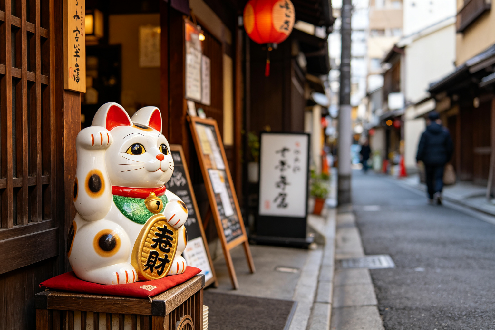
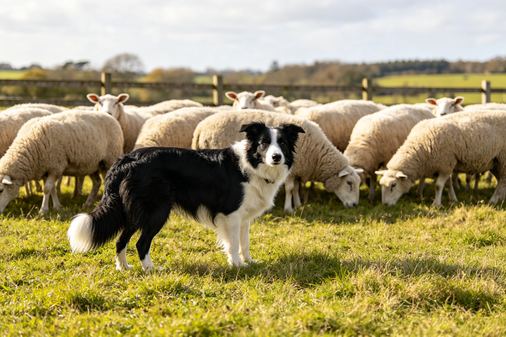
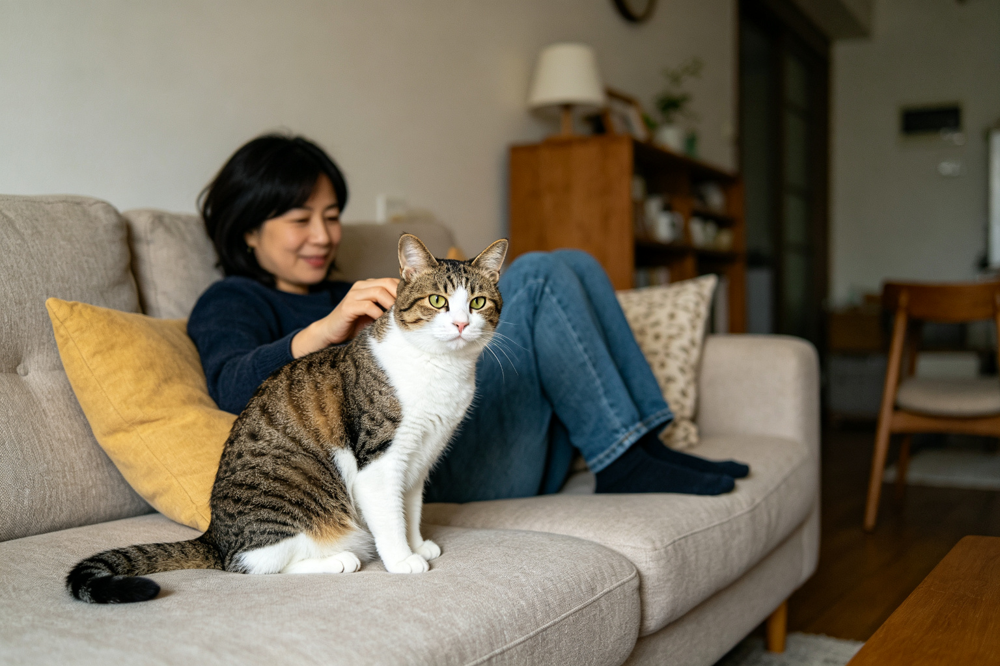
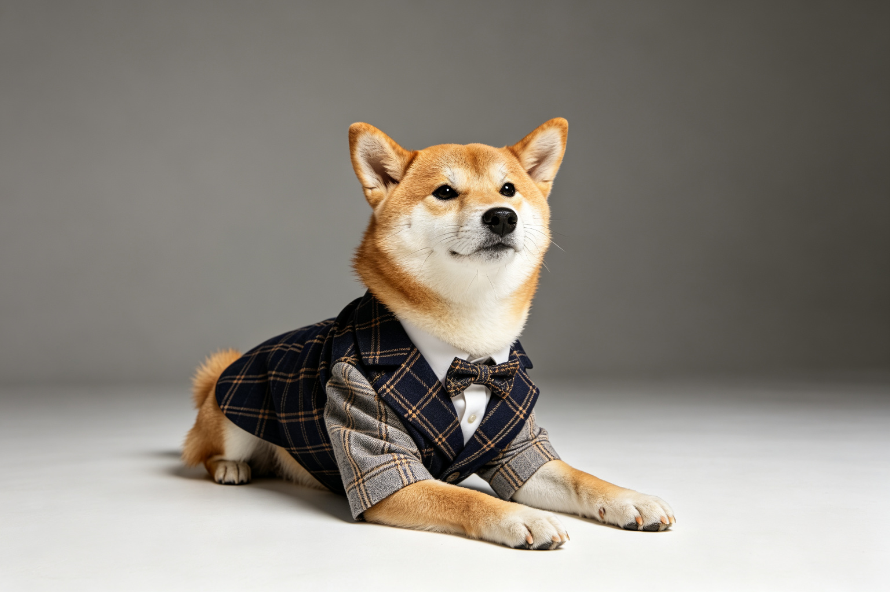
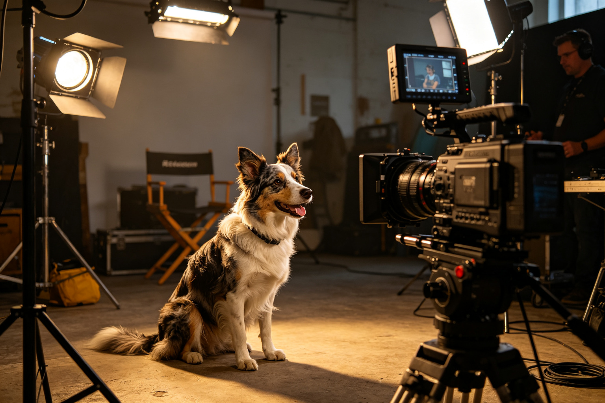

貓咪如何成為網際網路統治者
貓咪是網際網路的無冕之王——YouTube上貓咪影片的觀看次數超過數十億，迷因圖（meme）中貓咪佔據主導地位。從最早的LOLcats網站、Keyboard C...

日本貓文化：招財貓、貓站長與貓島
日本是世界上最貓咪友善的國家之一——招財猫是全球知名的吉祥物、貴志站有貓站長小玉、瀨戶內海有貓島、秋葉原有貓咖啡廳。從日本貓文化的歷史源頭（江戶時代的貓信仰）、...

狗狗工作歷史：牧羊犬、搜救犬與導盲犬
狗狗被人類馴化超過15000年，與人類的合作關係深植於歷史之中——從狩獵時代的幫手、農業時代的牧羊犬與守衛犬、工業時代的雪橇犬與警犬，到現代的導盲犬、搜救犬、治...
寵物殯葬文化興起：火化與紀念花園
越來越多飼主將寵物視為家人，寵物過世後的後事處理也從隨意丟棄變成正式的殯葬儀式——寵物火化、骨灰壇、紀念花園、寵物墓園、寵物寵物寵物寵物寵物。從寵物殯葬業的興起...

為什麼現代人叫自己貓奴狗奴？
過去寵物是「看家的」「抓老鼠的」，現在越來越多飼主自稱「貓奴」「狗奴」，將寵物視為「主子」「孩子」。這個人寵關係的翻轉不是偶然——從都市化與少子化、單人家庭增加...

寵物時尚產業崛起：衣服與生日派對消費
寵物時尚已經不是給狗穿件衣服這麼簡單——寵物時裝週、寵物名牌、寵物生日派對、寵物婚紗、寵物美甲，整個產業的市場規模超過數百億美元。從寵物時尚的歷史起源、主要市場...
文學中的貓：從愛倫坡到村上春樹
貓咪在文學中有著特殊的地位——愛倫坡的《黑貓》是恐怖文學經典、村上春樹的小說中貓咪是常見角色、夏目漱石的《我是貓》用貓的視角諷刺人類社會。從文學史上著名的貓咪作...

電影中的狗狗：從忠犬小八到海底總動員
狗狗在電影中一直是受歡迎的角色——《忠犬小八》的忠誠感動全球、《101忠狗》的斑點狗造成飼養熱潮、《海底總動員》的狗狗角色帶來歡笑。從好萊塢黃金時代的狗狗明星、...
寵物心理學大眾迷思：專家說的和你以為的
「貓咪很高冷」「狗狗搖尾巴就是開心」「兔子很笨」——這些大眾對寵物心理的常見認知，很多其實是迷思。動物行為學家的研究告訴我們：貓咪不是高冷而是表達方式不同、狗狗...